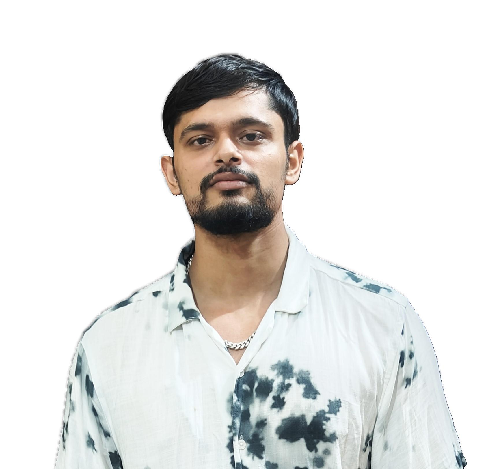

SAURABH TIWARI

Summary:
I am a motivated IT professional with1.8 years of experience in the technology sector.
I have strong skills in software development, troubleshooting, and IT support, with proficiency in various programming languages and tools.
My problem-solving abilities and collaborative mindset have contributed to successful project outcomes.
I am committed to staying up-to-date with industry trends and continuously improving my technical expertise.
I am now seeking opportunities to further develop my skills and contribute to impactful projects in a dynamic IT environment.
Skills:
- C, C++, JAVA, PYTHON
- COBOL, JCL, MAINFRAIME
- DevOps Tools :- Jenkins, ENDAVOR
- IMS DB, VSAM, DB2
Work Experience:
- I have worked for 1.8 years at Carelon global solution as a Sofware Developer.
- Worked on the the code fix and non-code fix aspects of the company as well.
- Demonstrated proficiency in COBOL programming language, developing and maintaining mainframe applications.
- Created and maintained JCL scripts for job scheduling and batch processing on the mainframe. Have worked on the code fix and non-code fix defects and has also handled the financial side of the system as well.
- Executed unit testing on new or modified software components.
- Participated in design meetings, code reviews, and sprint planning sessions.
- Analyzed financial data to identify discrepancies and develop solutions.
- Worked on Jenkins pipelines to promote code from development to staging, staging to testing, and ultimately to production, following best practices for each stage.
- Managed the release process for mainframe applications, coordinating with different teams to ensure smooth releases.
- Worked with DB2 databases on the mainframe, handling data storage, retrieval, and manipulation.
- Effectively created, prioritized, and managed Jira issues for mainframe development tasks, including bug tracking, feature requests, and user stories.
- Knowledge of other mainframe languages such as Assembler, PL/I (Programming Language One), and REXX (Restructured Extended Executor).
Education:
- B.Tech Graduate
- Galgotias College of Engineering and technology
- Information Technology
- Overall 7.52 CGPA
- High School
- Higher secondary certificate
Achievement and Certification:
- Has cleared internship in C, C++, Java under HP computers.
- Mainframe Development Certification
- Worked for as a professional for Carelon global solutions.
- District level cricket athlete
Others:
- Interest
- Fitness , Outdoor Activities, Sports
- Problem Solving
- Developing new skills
- Contact